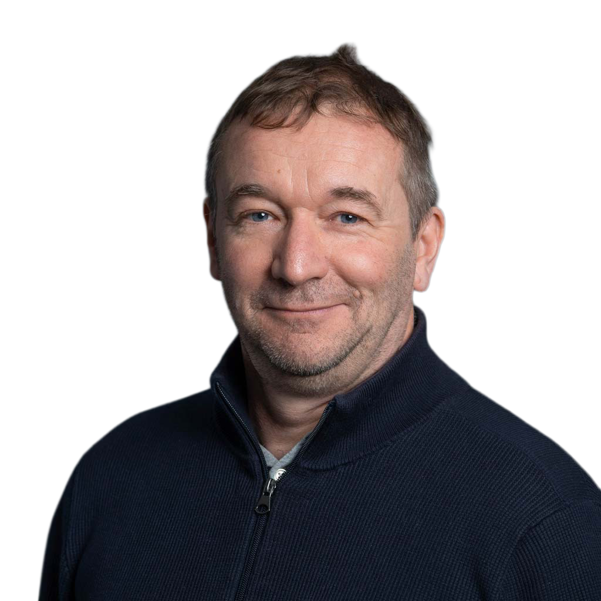
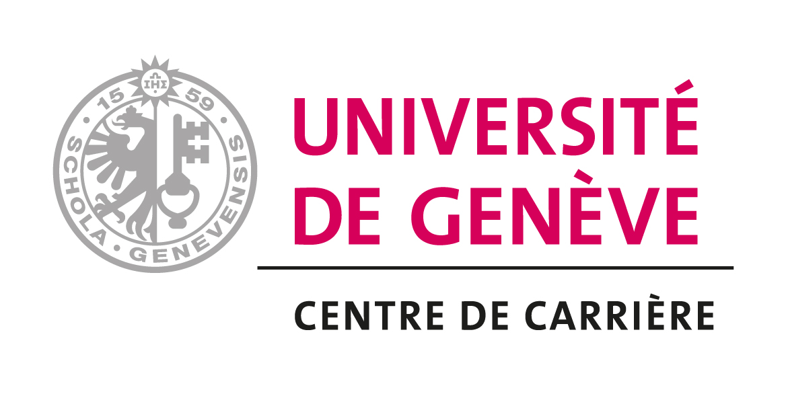
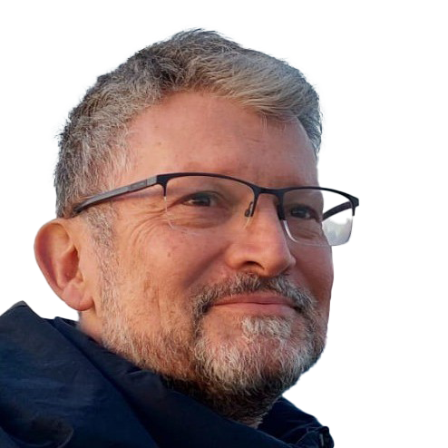
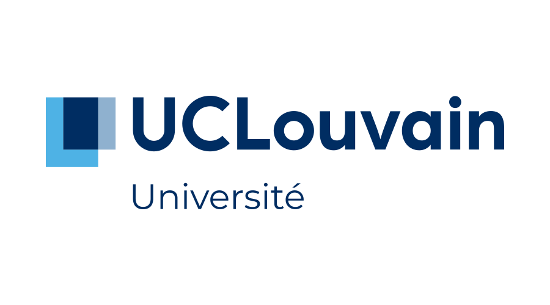
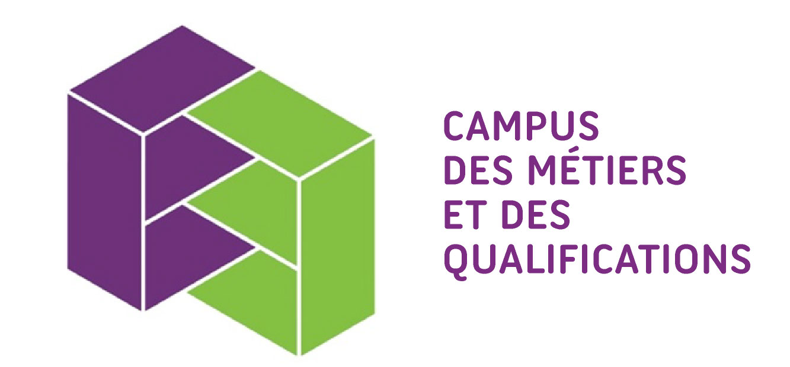
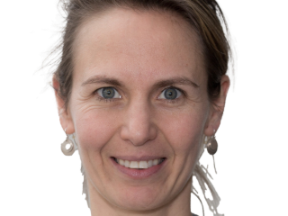
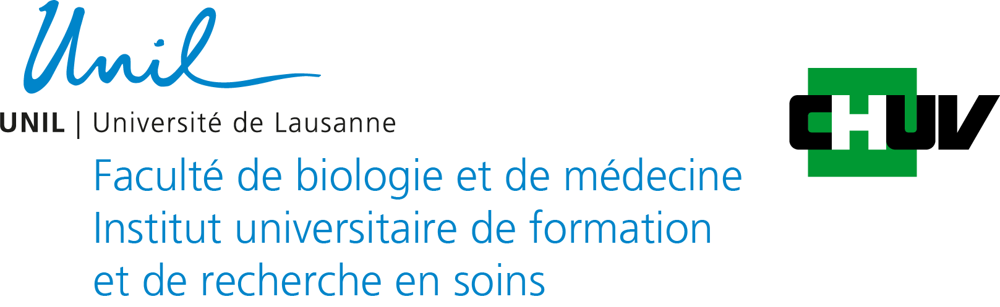
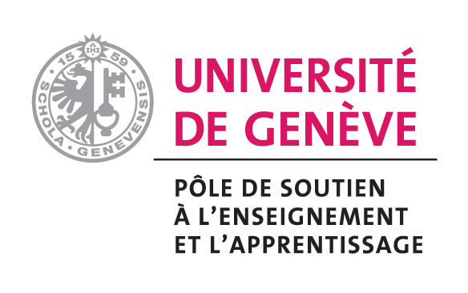
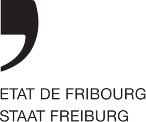

2026 · Rapport
Enquête quantitative
Parcours compétences — Enquête quantitative
Mieux comprendre les besoins et perceptions des étudiant·es concernant les compétences transversales.

Observatoire des projets étudiants · Cours « Professionnalisation & intervention » · FPSE, Université de Genève · prointer.netlify.app
Chaque année, les étudiant·es du cours travaillent à partir de problématiques proposées par des commanditaires. Cet observatoire valorise leurs démarches, leurs productions et les compétences développées.
Découvrir les projets, identifier les enjeux et former les groupes.
Comprendre le contexte, les publics, l'existant et les contraintes.
Définir des objectifs, choisir un format et produire un prototype.
Défendre les choix, recevoir des retours et finaliser le livrable.
Mieux comprendre les besoins et perceptions des étudiant·es concernant les compétences transversales.
Recueillir des témoignages étudiants sur les compétences transversales.
Évaluer à long terme l'impact d'un atelier sur la pratique professionnelle.
Transformer une ressource documentaire en jeu sérieux pédagogique hybride.
Penser l'architecture d'un site pour diffuser des résultats de recherche.
Rendre des journées d'accueil plus dynamiques et participatives.
Sensibiliser les enseignant·es universitaires à l'alignement pédagogique.
Améliorer les questionnaires des formations continues du personnel.
Année : 2026 · Commanditaire : UNIGE — DIFE — Centre de carrière


Mieux comprendre les besoins, perceptions et attentes des étudiant·es concernant les compétences transversales, afin de soutenir leur employabilité.
Étudiant·es de l'Université de Genève, alumni et acteurs institutionnels impliqués dans l'insertion professionnelle.
Conception d'une enquête quantitative auprès des étudiant·es.
Rapport de synthèse décisionnelle avec analyses, visualisations et recommandations stratégiques.
[Citation à ajouter — Marine Guigon, DIFE, Centre de carrière, UNIGE]Marine Guigon · Chargée de mission « Parcours compétences » · UNIGE — DIFE
À compléter Le rapport a-t-il été transmis à la direction du DIFE ? A-t-il alimenté une décision institutionnelle concernant le dispositif « Parcours compétences » ?
Année : 2026 · Commanditaire : UNIGE — DIFE — Centre de carrière
Mieux comprendre la manière dont les étudiant·es perçoivent les compétences transversales.
Étudiant·es de l'Université de Genève interrogé·es sur le campus.
Approche qualitative par entretiens courts de type micro-trottoir.
Vidéo de micro-trottoir exploitable comme support de réflexion et de communication.
[Citation à ajouter — Marine Guigon, DIFE, Centre de carrière, UNIGE]Marine Guigon · Chargée de mission « Parcours compétences » · UNIGE — DIFE
À compléter La vidéo a-t-elle été diffusée ? Sur quel canal (site UNIGE, réseaux sociaux, événements) ? A-t-elle servi de support de communication pour le dispositif ?
Année : 2026 · Commanditaire : UCLouvain


Évaluer si les compétences travaillées dans un atelier de communication non verbale sont réutilisées dans la pratique enseignante.
Alumni ayant suivi l'atelier et actuellement en situation professionnelle.
Conception d'un questionnaire réutilisable combinant plusieurs types de questions.
Questionnaire d'évaluation à long terme.
[Citation à ajouter — Mathieu Couplet, UCLouvain]Mathieu Couplet · Enseignant en communication non-verbale · UCLouvain
À compléter Le questionnaire a-t-il été envoyé aux alumni ? Combien de réponses ont été recueillies ? Les résultats ont-ils modifié le contenu ou le format de l'atelier ?
Année : 2026 · Commanditaire : CMQ

Transformer une ressource existante sur le médicament en dispositif pédagogique actif et ludique.
Étudiant·es en BTS Biotechnologies Recherche et Production.
Scénarisation d'un parcours pédagogique avec questions, cas pratiques, défis et débat final.
Jeu sérieux pédagogique hybride comprenant un plateau, une interface projetée, une banque de questions, des fiches et un guide d'utilisation.
[Citation à ajouter — Maud Bernies, CMQ Lyon]Maud Bernies · Directrice CMQe « Biotech Santé » · CMQ Lyon
À compléter Le jeu sérieux a-t-il été testé en séance réelle avec des apprenants BTS ? Le CMQ prévoit-il de l'intégrer à son programme de formation ?
Année : 2025 · Commanditaire : UNIGE — FPSE

Penser l'architecture d'un site destiné à diffuser des résultats de recherche sur les liens entre émotion et éducation.
Enseignant·es, éducateurs/trices, directions, infirmiers/ères scolaires et praticien·nes de l'éducation.
Analyse du besoin de médiation scientifique et réflexion sur l'organisation des contenus.
Maquette de site web.
[Citation à ajouter — Nathalie Mella, UNIGE — FPSE]Nathalie Mella · Chargée de cours · UNIGE — FPSE
À compléter La maquette a-t-elle servi de base pour le développement d'un vrai site ? Le projet de médiation scientifique a-t-il été soumis à financement ?
Année : 2025 · Commanditaire : IUFRS / Lausanne

Rendre les journées d'accueil de l'IUFRS plus dynamiques, participatives et intégratives.
Nouveaux étudiant·es, enseignant·es, intervenant·es, tuteurs/trices et responsables administratifs.
Réflexion sur des activités favorisant les rencontres et le sentiment d'appartenance.
Dispositif pour une journée d'accueil participative ou scénario d'activités.
[Citation à ajouter — Gaëtan Moerman, IUFRS / Lausanne]Gaëtan Moerman · Conseiller pédagogique · IUFRS — Université de Lausanne
À compléter Le dispositif a-t-il été mis en œuvre lors d'une journée d'accueil à l'IUFRS ? Quels retours les participant·es ont-ils exprimés ?
Année : 2024 · Commanditaire : UNIGE — Pôle SEA

Sensibiliser les enseignant·es universitaires à l'alignement pédagogique.
Enseignant·es universitaires et participant·es aux formations du Pôle SEA.
Analyse de supports existants et comparaison de formats : vidéo, dépliant, podcast.
Podcast de sensibilisation à l'alignement pédagogique.
[Citation à ajouter — Catherine Huneault, Pôle SEA, UNIGE]Catherine Huneault · Responsable développement et qualité des cursus · UNIGE — Pôle SEA
À compléter Le podcast a-t-il été intégré aux ressources du Pôle SEA ? A-t-il été diffusé dans les formations pour enseignant·es universitaires ?
Année : 2024 · Commanditaire : État de Fribourg

Améliorer les questionnaires d'évaluation des formations continues proposées au personnel de l'État de Fribourg.
Personnel de l'État de Fribourg, cadres, collaborateur/trices, apprenti·es et responsables de formation.
Analyse des questionnaires existants à partir de cadres théoriques de l'évaluation de la formation.
Questionnaire d'évaluation de formation.
[Citation à ajouter — Sophie Margaronis, État de Fribourg]Sophie Margaronis · Responsable du programme de formation continue · État de Fribourg
À compléter Le questionnaire a-t-il été déployé auprès du personnel de l'État de Fribourg ? A-t-il remplacé ou complété les outils d'évaluation existants ?
Vous avez une problématique de formation, d'accompagnement, de communication pédagogique ou de professionnalisation ? Proposez un projet aux étudiant·es du cours pour le semestre de printemps 2027 !
Un bon projet doit répondre à un vrai besoin, contextualisé, et utile à un public cible identifié.
Dépôt avant le 31 janvier 2027 · réponse le 15 mars 2027